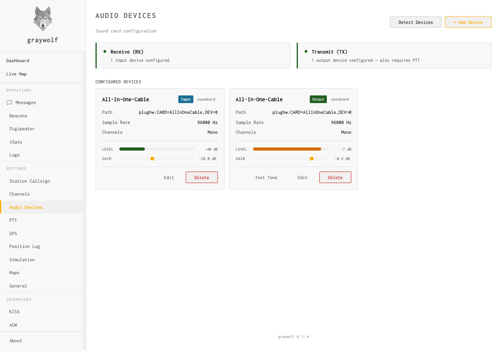
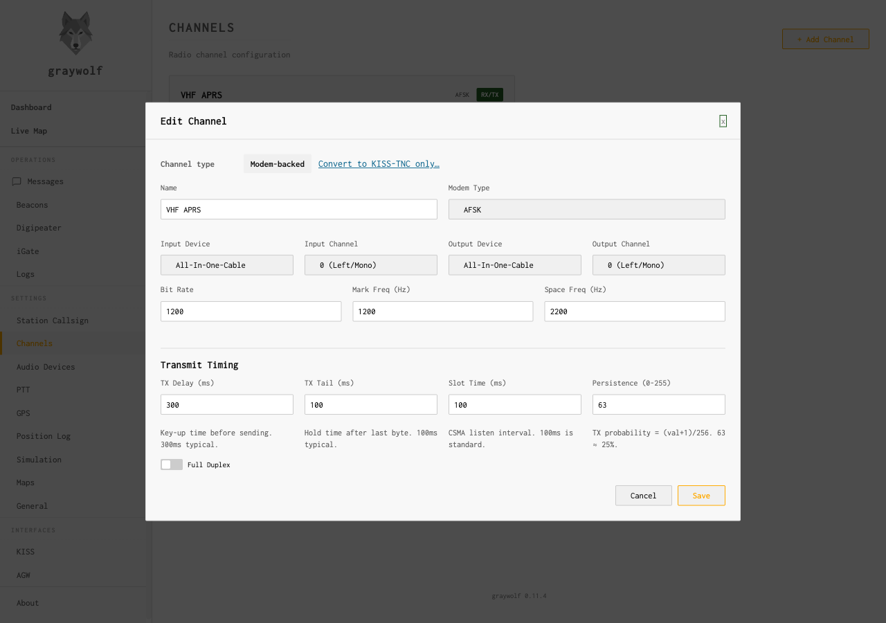
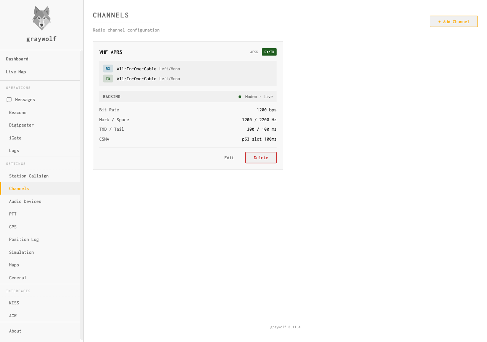
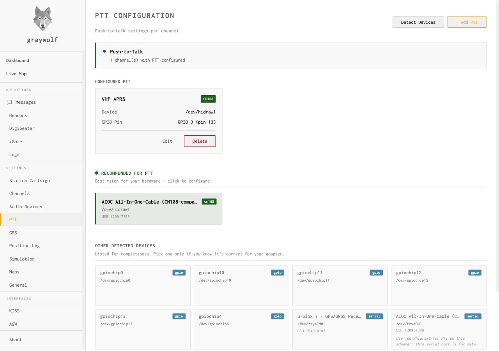
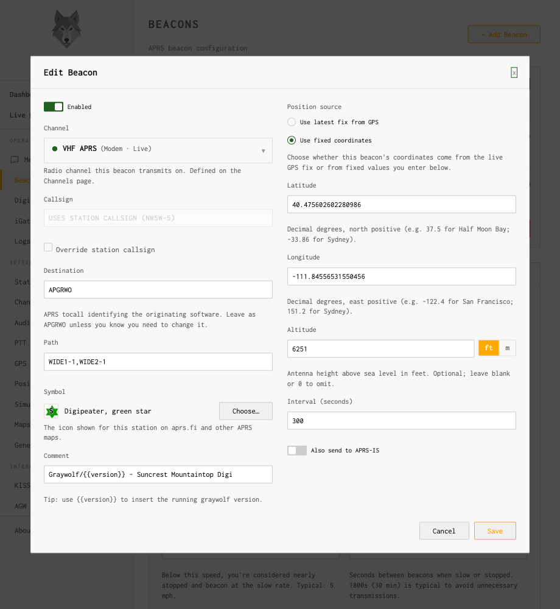
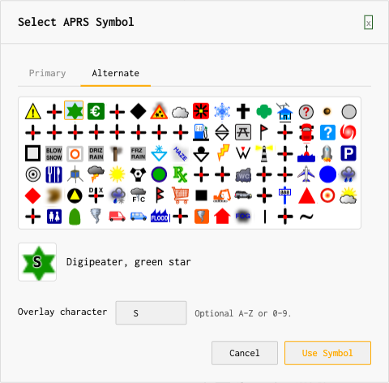
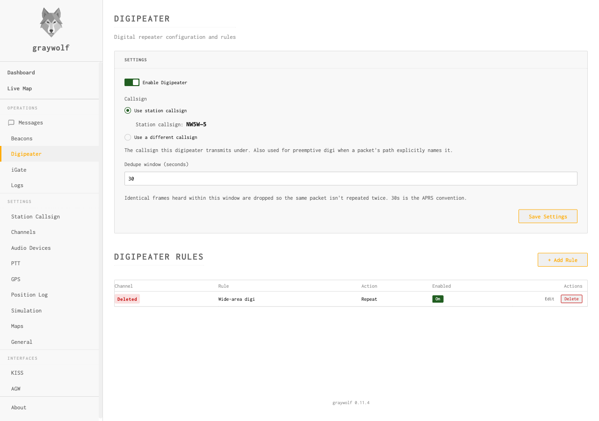

GrayWolf Configuration
The GrayWolf web UI (:8080) — station, audio, channels, PTT, beacons, iGate
GrayWolf has its own web UI on port 8080. This page covers the configuration an OASIS operator needs to get on the air; for the exhaustive per-field reference, the full GrayWolf handbook ships in the OASIS reference library.
Hardware first. You need a 2 m-capable radio, an audio/PTT interface (DigiRig, AIOC, DRA-Pi-Zero, or an RTL-SDR for RX-only), and the interface plugged in before you configure channels.
1 · Station callsign
Settings → Station Callsign — enter your callsign with SSID
(e.g. W4MHI-5). The SSID distinguishes multiple stations on one call:
-5 for a fixed base, -9 mobile, -1 a digipeater.
-5 is a safe default for a Pi EOC station.
2 · Audio devices
Settings → Audio Devices → Add Device — add your sound card for RX and TX. Use Detect Devices to find the ALSA path; 96000 Hz, Mono. Do this before Channels, or the channel dropdown will be empty.

3 · Channels
Settings → Channels → Add Channel — an AFSK VHF APRS channel: 1200 bps, mark 1200 Hz, space 2200 Hz, input/output = the sound card from step 2, TX delay 300 ms.


4 · PTT
Settings → PTT → Add PTT. For a DigiRig / AIOC / CM108-based
USB cable, select the /dev/hidraw* device and leave the GPIO field blank.
For a direct GPIO wire (e.g. GPIO 12 on the DRA-Pi-Zero), leave Device blank and enter
the BCM number. Pick one method — not both.

5 · Beacons
Operations → Beacons → Add Beacon — choose the VHF channel,
a position source (fixed lat/lon or GPS), path WIDE1-1,WIDE2-1, a symbol,
and an interval (300 s is a safe fixed-station default). SmartBeaconing adjusts the
rate by speed for mobile use.


6 · Digipeater (optional)
Operations → Digipeater — enable and add rules. A 30 s dedupe
window (APRS convention) drops duplicates; add a wide-area rule for standard
WIDEn-N digipeating.

7 · iGate (optional)
Operations → iGate — iGating needs internet on the Pi. Enable it,
set the APRS-IS server, enter your callsign and passcode, and a server-side filter
(e.g. r/47.6/-122.0/100 for a 100 km radius). Keep RF TX rules specific —
broad wildcards flood the local frequency.

GrayWolf also exposes KISS and AGW interfaces for third-party software (Winlink, Xastir). The KISS TNC is what Pat reuses for experimental RF Winlink — no second modem needed.